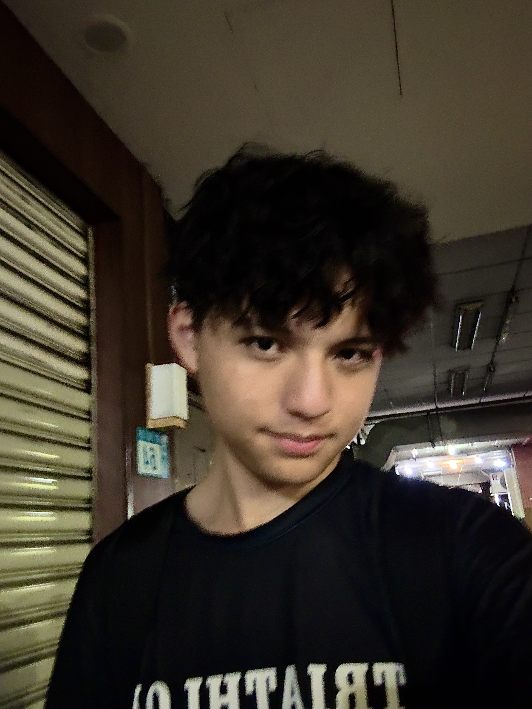

空間設計與弱電實作
房間佈置與自裝電燈開關的系統化思考
這次動手改造自己的房間，從設計草圖、視覺佈置到實際拉線更換電燈開關。將物理空間視為一個巨型系統，每個家具的擺放與電路的走向，都必須符合生活動線。
Read Log
我著迷於拆解系統的底層邏輯，並用最流暢、直覺的方式重新呈現。我的創作橫跨數位與物理世界——從獨立開發 App、設計 Minecraft 的指令遊戲地圖，到硬體的弱電水電實作、以及吉他與鋼琴的音樂表達。
我是典型的目的導向自學者，不為死板的規則服從，只為有意義的專案拼命。將哲學觀念運用進品牌經營，曾透過網路接修手機賺錢。
擅長花大量時間深度研究未知領域，並精準掌握核心運作邏輯。
獨立製作 App、設計 Minecraft 指令遊戲地圖、拆解並重構數位系統。
具備實務的弱電系統配置、水電線路實作能力，將創作延伸至物理空間。
精通吉他與鋼琴演奏、歌唱，同時具備豐富的運動與健康生理知識。
獨立一手包辦邏輯設計與開發，將複雜的音樂理論視覺化、數位化，打造輔助鋼琴學習的高效工具。
於 Akiwei 團隊內工作，參與實務運作，累積跨領域協作、解決問題與專案執行的實戰經驗。
純粹的鋼琴演奏紀錄，直接且真實地呈現音樂演繹與練習成果。
通過網路接單經營，替客戶用比實體店更便宜的價格維修，不用付房租我成本更低也賺更多。
在 Akiwei 學習期間，不僅處理常規業務，更將哲學思維融入品牌經營之中，打造具備深度與核心價值的商業邏輯。
延續對底層邏輯的好奇心，深入拆解精密電子設備。除了排除手機硬體故障，更能從物理層面掌握科技產品的運作原理。
運用邏輯分析能力，透過數字譜（簡譜）的移調運算與音階重映射，將抽象的樂理結構轉化為精準的參數系統。